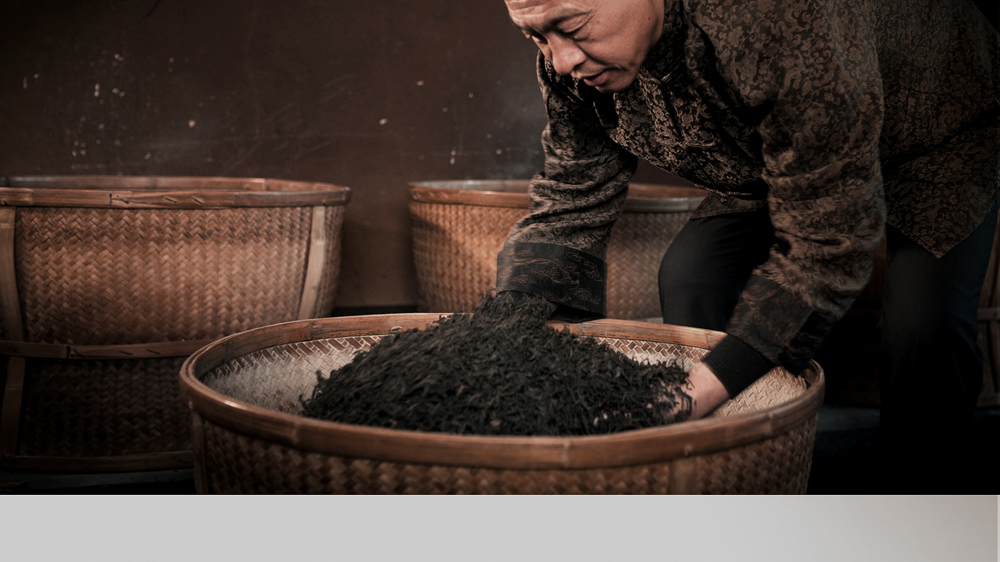
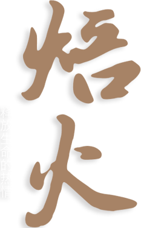

核心工艺
大红袍（武夷岩茶）之所以能形成独特的韵味和茶香，关键靠的就是一个“火”，岩茶工艺有：焙火、炖火、复火、足火、
过火……制茶师傅的 “火候”，指的是用“火”的技巧和功夫：用火来固条索，用火来止发酵，用火来定香气，用火来
调汤色，用火来散杂味，用火来延久存……焙火的程度决定了茶叶的品质，而对焙火的理解和掌握则决定了制茶师傅技艺的高低。
武夷大红袍
国家级非物质文化遗产项目
武夷岩茶︵大红袍︶制作技艺传承人
武夷岩茶国家标准主要起草人
大红袍（武夷岩茶）之所以能形成独特的韵味和茶香，关键靠的就是一个“火”，岩茶工艺有：焙火、炖火、复火、足火、
过火……制茶师傅的 “火候”，指的是用“火”的技巧和功夫：用火来固条索，用火来止发酵，用火来定香气，用火来
调汤色，用火来散杂味，用火来延久存……焙火的程度决定了茶叶的品质，而对焙火的理解和掌握则决定了制茶师傅技艺的高低。
“在制茶的技术性与艺术性上，武夷岩茶应首居第一，
尤其在整个制作过程中更是千变万化，
会产生很多令人陶醉、
赞叹的色、香、味、形的欣赏境界。
好的武夷岩茶必须具备绝佳的生态、优良的树种、
精湛的工艺方能制成。如果一个制作师傅太想挣钱，
心浮气躁，那么肯定出不了一泡好茶。”